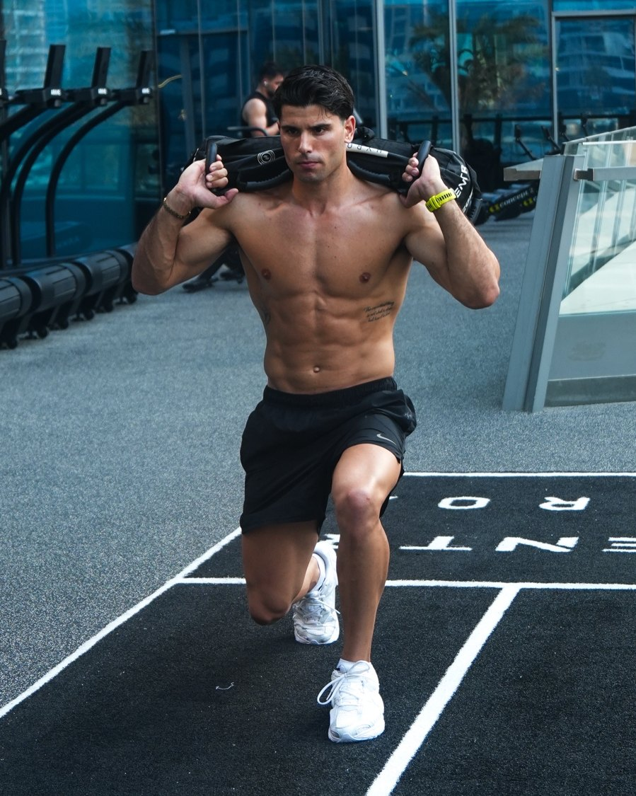

il battito lo misura, le calorie le indovina
Una revisione del 2025 su 56 studi ha trovato che uno degli smartwatch più usati sbaglia il battito in media del 4%, ma le calorie di circa il 28%, in tutte le attività provate. E in uno studio sulla corsa all'aperto Garmin e Apple Watch segnavano più calorie di quelle bruciate davvero, di oltre il 20%.
usalo per il ritmo
Battito, passi, ritmo e sonno sono dati affidabili: usali per vedere se nel tempo migliori.
non per mangiare
Le calorie bruciate non sono un permesso: le calorie da mangiare le decidono il piatto e la bilancia.
guarda la bilancia
Se in tre settimane il peso medio non scende, il deficit non c'è, qualunque cosa dica l'orologio.
cosa succede quando ti alleni e mangi con un piano
Alcuni dei ragazzi che seguiamo con il team SUPER-ALE.
Risultati individuali, ottenuti con allenamento, alimentazione e costanza. Non sono garantiti e dipendono dal punto di partenza di ognuno.
vuoi un piano che non dipenda dall'orologio?
Con il team SUPER-ALE costruiamo allenamento e alimentazione sul tuo punto di partenza e sulla tua settimana, e li aggiustiamo insieme guardando i risultati veri.
Prenota la tua call gratuita
- Costo della corsa, circa 1 kcal per kg per km e quasi indipendente dalla velocità: Mayhew JL, Oxygen cost and energy expenditure of running in trained runners, Br J Sports Med, 1977.
- Orologi e calorie nella corsa: Le S et al., Validity of three smartwatches in estimating energy expenditure during outdoor walking and running, Front Physiol, 2022.
- Revisione sugli smartwatch: Choe JP, Kang M, Apple watch accuracy in monitoring health metrics: a systematic review and meta-analysis, Physiol Meas, 2025.
- Calorie dei cibi: CREA, Tabelle di composizione degli alimenti (pizza con pomodoro e mozzarella, 255 kcal/100 g, pizza da circa 320 g); INRAN (birra chiara, cornetto); etichetta Coca-Cola.